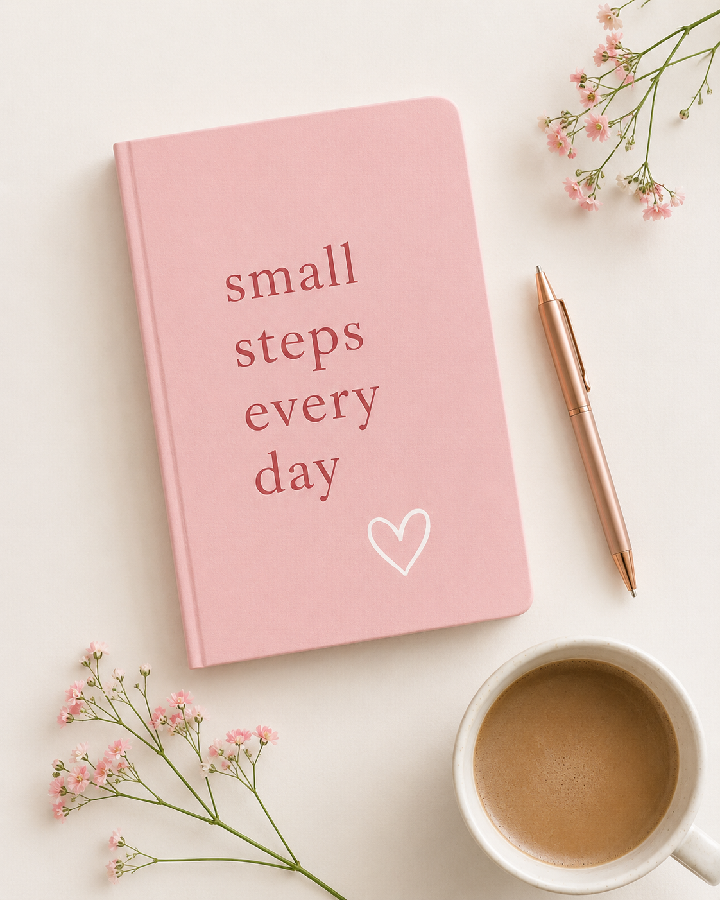
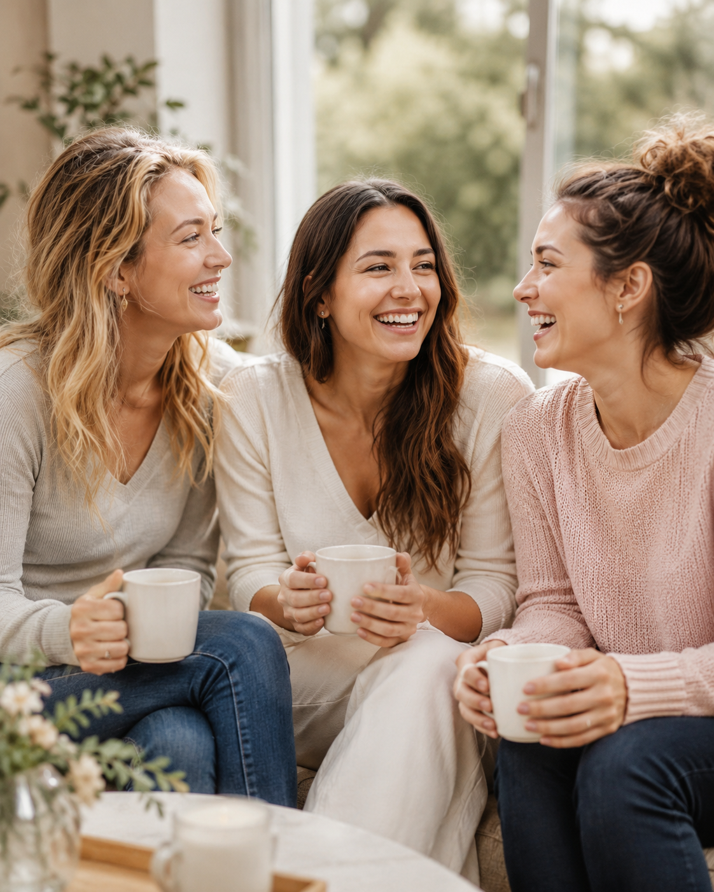
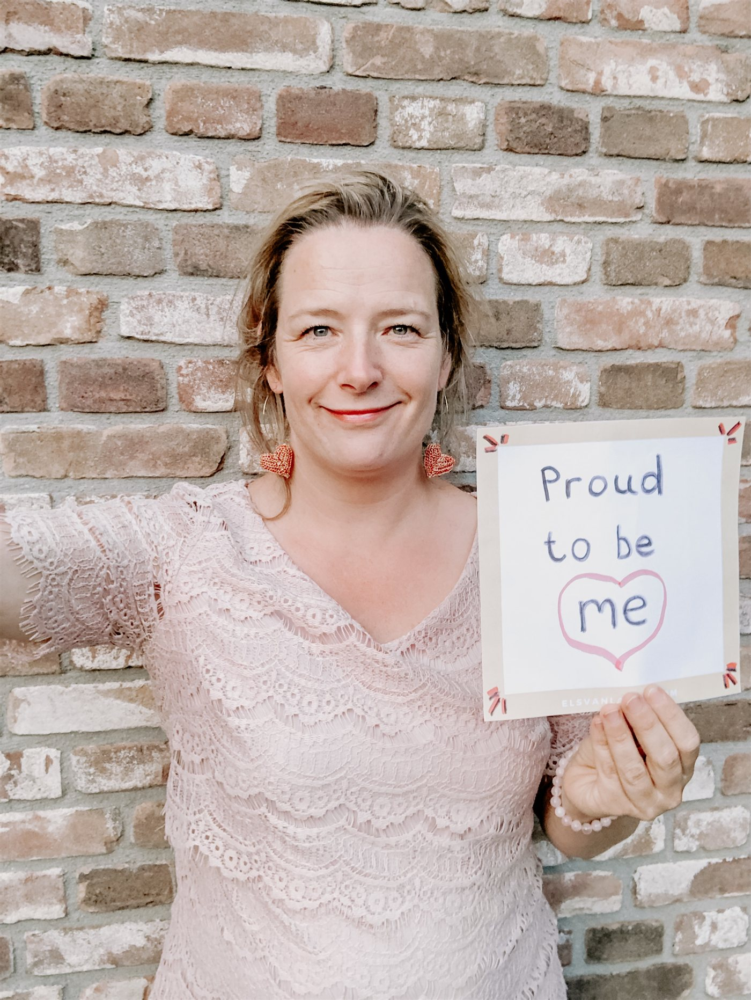

25 euro, één dagboek.
Ik draag bij →Steun IK GA LEVEN
IK GA LEVEN kost een vrouw niets. Op dit moment betaal ik het zelf. Hier lees je wat het wel kost, en wat jij kunt dragen.
Ik draag bij →Waarom gratis
Er is een reden dat IK GA LEVEN gratis is, en het is geen marketingkeuze.
De vrouwen voor wie deze cursus bedoeld is hebben vaak geen eigen geld. Of ze hebben het wel, maar staat elke afschrijving op een rekening waar hij in kan kijken. Een factuur van een cursus over geweld in je relatie is dan geen betaling. Dat is een risico.
Dus vraag ik haar niets. Dat blijft zo.
Help de levens van vrouwen veiliger te maken.
Wat jouw bijdrage doet
Je kunt zelf kiezen wat je draagt. Dit is wat elk bedrag betekent voor de vrouwen die meedoen.

25 euro, één dagboek.
Ik draag bij →
250 euro, de hele groep.
Ik draag bij →25 euro per maand, twaalf vrouwen.
Ik draag bij →Liever een ander bedrag? Op de betaalpagina vul je zelf in wat je draagt, vanaf 5 euro.
Voor bedrijven, fondsen en netwerken
Werk je bij een bedrijf, een fonds, een praktijk of een netwerk dat meer wil doen dan het papier?
Dan laat ik zien wat een hele groep kost en wat erbij komt kijken.
Eerlijk gerekend
Vijfentwintig euro dekt het papier. Niet het hele programma.
Daarnaast zijn er de vertaling en bewerking van het materiaal, de licentie, de online leeromgeving, de besloten community, en de uren die ik besteed aan het begeleiden van de groep. Dat betaal ik nu uit eigen zak,
en ik zoek daarvoor subsidie en sponsoring.
Ik ben graag transparant over waar je geld voor gebruikt wordt en wat nog niet gedekt is.
Waarom nu
IK GA LEVEN is de Nederlandse bewerking van Own My Life. In Engeland en Ierland zijn daar
meer dan twintigduizend vrouwen doorheen gegaan.
Wie deze eerste groep draagt, financiert dus meer dan tien dagboeken. Je financiert het bewijs dat dit hier ook werkt.
Wie dit doet
Ik ben Hiltje. Als huisarts en als arts bij Veilig Thuis heb ik gewerkt met geweld in relaties, zoals partnergeweld en kindermishandeling.
Ik ben door Natalie Collins, de maker van Own My Life, opgeleid om dit programma te leiden. In Nederland bestond het niet. Nu wel.
Over de cursus →
Waar je aan toe bent
WOWVROUW is een bedrijf, geen stichting. Er is geen ANBI-status, dus je bijdrage is geen aftrekbare gift. Je krijgt er ook geen logo of tegenprestatie voor.
Je bijdrage is geen betaling voor iets dat jij krijgt, dus er gaat geen BTW af.
Het hele bedrag gaat naar de cursus.
Wat je krijgt is dit: een vrouw die haar eigen dagboek in handen heeft.
Vragen over facturen, jaarrekening of verantwoording? Mail steun@ikgalevencursus.nl.
Nog een manier om te helpen
Ken je een fonds, een bedrijf of iemand die dit werk zou willen steunen?
Breng ons met elkaar in contact. Eén introductie doet vaak meer dan een donatie.
Eén mail is genoeg. Ik neem het van daar over.
Steun IK GA LEVEN
Voor 25 euro ligt er een dagboek klaar voor een vrouw die tien weken lang haar eigen verhaal terugpakt.
Liever zelf overmaken? Dat kan op NL87 KNAB 0777 1898 87 ten name van WoW! Vrouw, met "steun" als omschrijving.
Eerst iets vragen kan ook: mail steun@ikgalevencursus.nl.
Op de hoogte blijven